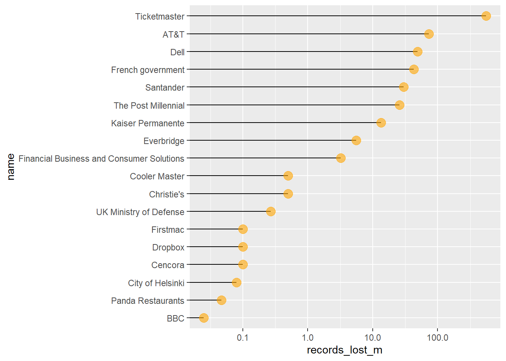

Warning: package 'stringr' was built under R version 4.4.1
── Attaching core tidyverse packages ──────────────────────── tidyverse 2.0.0 ──
✔ dplyr 1.1.4 ✔ readr 2.1.5
✔ forcats 1.0.0 ✔ stringr 1.5.1
✔ ggplot2 3.5.1 ✔ tibble 3.2.1
✔ lubridate 1.9.3 ✔ tidyr 1.3.1
✔ purrr 1.0.2
── Conflicts ────────────────────────────────────────── tidyverse_conflicts() ──
✖ dplyr::filter() masks stats::filter()
✖ dplyr::lag() masks stats::lag()
ℹ Use the conflicted package (<http://conflicted.r-lib.org/>) to force all conflicts to become errors
library(plotly)
Warning: package 'plotly' was built under R version 4.4.1
Attaching package: 'plotly'
The following object is masked from 'package:ggplot2':
last_plot
The following object is masked from 'package:stats':
filter
The following object is masked from 'package:graphics':
layout
library(shiny)library(scales)
Attaching package: 'scales'
The following object is masked from 'package:purrr':
discard
The following object is masked from 'package:readr':
col_factor
Rows: 481 Columns: 9
── Column specification ────────────────────────────────────────────────────────
Delimiter: ","
chr (6): organisation, month, story, sector, method, source_link
dbl (3): records_lost, year, data_sensitivity
ℹ Use `spec()` to retrieve the full column specification for this data.
ℹ Specify the column types or set `show_col_types = FALSE` to quiet this message.
#remove commasdata$`records_lost`<-gsub(",", "", data$`records_lost`)data$`records_lost`<-gsub(";", "", data$`records_lost`)# convert chr to numericdata$`records_lost`<-as.integer(data$`records_lost`)# mutate match month.abb with data$month into a new columndata <- data %>%mutate(month.abb =match(data$month, month.abb))data <- data %>%mutate(records_lost_m =`records_lost`/1000000)data <- data %>%mutate(records_lost_k =`records_lost`/1000)head(data)
# A tibble: 6 × 12
organisation records_lost year month story sector method data_sensitivity
<chr> <int> <dbl> <chr> <chr> <chr> <chr> <dbl>
1 AOL 92000000 2004 Jun A fo… web insid… 1
2 Ameritrade Inc. 200000 2005 Apr A co… finan… lost … 2
3 Citigroup 3900000 2005 Jun A bo… finan… lost … 3
4 Cardsystems Sol… 40000000 2005 Jun An u… finan… hacked 3
5 AOL 20000000 2006 Aug AOL … web oops! 1
6 US Dept of Vet … 26500000 2006 Jul The … gover… lost … 2
# ℹ 4 more variables: source_link <chr>, month.abb <int>, records_lost_m <dbl>,
# records_lost_k <dbl>
data_2024 <- data %>%filter(year ==2024)head(data_2024)
# A tibble: 6 × 12
organisation records_lost year month story sector method data_sensitivity
<chr> <int> <dbl> <chr> <chr> <chr> <chr> <dbl>
1 Kaiser Permanen… 13400000 2024 Apr A le… health oops! 3
2 Ticketmaster 560000000 2024 Jun Hack… media hacked 3
3 Cooler Master 500000 2024 May Thre… tech hacked 2
4 Financial Busin… 3200000 2024 Feb A U.… tech hacked 2
5 Santander 30000000 2024 May Thre… finan… hacked 3
6 Everbridge 5600000 2024 May The … tech hacked 1
# ℹ 4 more variables: source_link <chr>, month.abb <int>, records_lost_m <dbl>,
# records_lost_k <dbl>
head(data_2024)
# A tibble: 6 × 12
organisation records_lost year month story sector method data_sensitivity
<chr> <int> <dbl> <chr> <chr> <chr> <chr> <dbl>
1 Kaiser Permanen… 13400000 2024 Apr A le… health oops! 3
2 Ticketmaster 560000000 2024 Jun Hack… media hacked 3
3 Cooler Master 500000 2024 May Thre… tech hacked 2
4 Financial Busin… 3200000 2024 Feb A U.… tech hacked 2
5 Santander 30000000 2024 May Thre… finan… hacked 3
6 Everbridge 5600000 2024 May The … tech hacked 1
# ℹ 4 more variables: source_link <chr>, month.abb <int>, records_lost_m <dbl>,
# records_lost_k <dbl>
data_2024 <- data_2024 %>%mutate(name =fct_reorder(organisation, records_lost_m)) # to order the data in the graphggplot(data_2024, aes(x=name, y=records_lost_m)) +geom_segment( aes(x=name, xend=organisation, y=0, yend=records_lost_m)) +geom_point(size=4, alpha=0.6, color="orange") +scale_y_log10(labels =label_number()) +coord_flip() +theme_gray() +xlab("")
Warning in scale_y_log10(labels = label_number()): log-10 transformation
introduced infinite values.

# Display ranking and statistics on info. Enable filtering functionality. # order data function data_2024 <- data_2024 %>% # mutate(name = fct_reorder(organisation, records_lost_m)) # to order the data in the graph# add data ranking, if more 2 same organisation in the same year, then add together.# SHINY APPsectorFilter <-c(unique(data$sector),"All")ui <-fluidPage(theme = bslib::bs_theme(bootswatch ="flatly"),titlePanel("Data Breaches in History" ),sidebarLayout(sidebarPanel(# inputsselectInput("Year", "Filter by Year", choices =unique(data$year), selected =2024),sliderInput("val_top", "Show the top n Records:", min =1, max =30, value =10, step =1),# Data information when you hover etc.verbatimTextOutput("info"), ),mainPanel(plotOutput("plot", width ="900px", height ="600px", click="plot_click"),verbatimTextOutput("summary"), ) ))server <-function(input, output, session) { output$plot <-renderPlot({ data_plot <- data %>%filter(year == input$Year) %>%mutate(name =fct_reorder(organisation, records_lost_m)) %>%mutate(Rank =rank(-records_lost_m, ties.method ="average")) %>%arrange(Rank) %>%head(input$val_top)ggplot(data_plot, aes(x=name, y=records_lost_m)) +geom_segment( aes(x=name, xend=organisation, y=0, yend=records_lost_m)) +geom_point(size=4, alpha=0.6, color="orange") +scale_y_log10(labels =label_number()) +coord_flip() +theme_gray() +xlab("") }, res =96) output$info <-renderText({ ranked_data <- data %>%filter(year == input$Year) %>%mutate(name =fct_reorder(organisation, records_lost_m)) %>%mutate(Rank =rank(-records_lost_m, ties.method ="average")) %>%# sort by rankarrange(Rank) %>%# get ranks 1-10head(input$val_top)# Create a text representation of the top 10 top_10_text <- ranked_data %>%mutate(Info =paste(Rank, ": ", name, " - Records Lost (M): ", records_lost_m)) %>%pull(Info) %>%paste(collapse ="\n")# Combine with the default valuepaste0("Year: 2024", "\n","Total Records Lost (M): ", sum(ranked_data$records_lost_m), "\n\n","Top 10 Rankings:\n", top_10_text ) })}shinyApp(ui, server)
Shiny applications not supported in static R Markdown documents